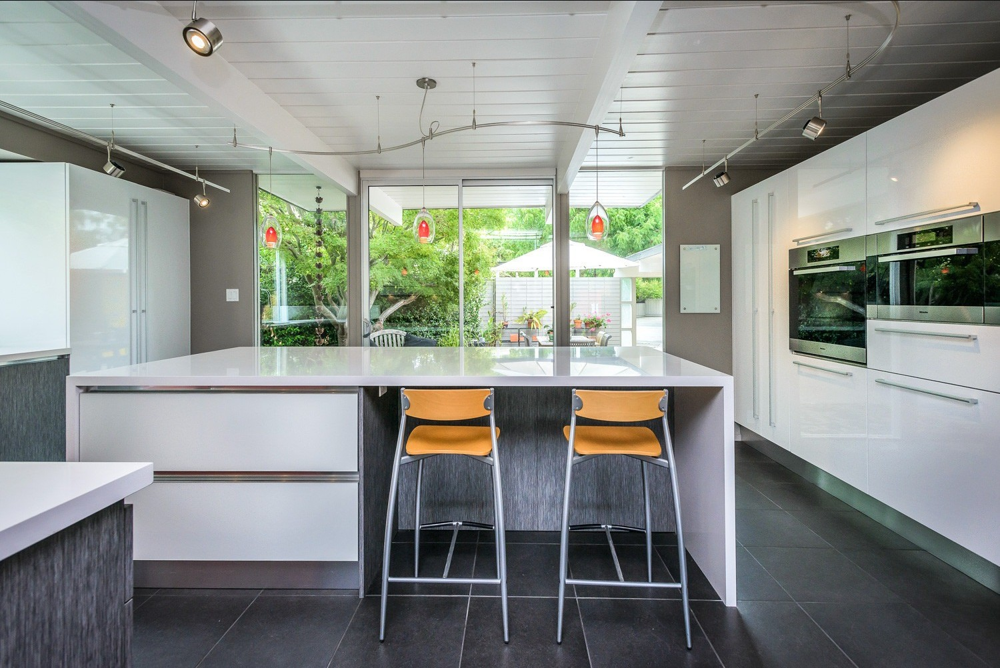

Exotic
Higher-contrast veining and stronger statement-surface movement.

Asina Global
Countertop Catalog
Asina Global / Countertops
Countertops
Compare Exotic, Natural, and Grain first, then reach out for pricing or design help. The countertop program is based in Central Florida and supports projects nationwide.
Pick the look first: bold movement, softer veining, or a steadier grain.
Higher-contrast veining and stronger statement-surface movement.
Cleaner Carrara and Bianca-inspired boards for calmer premium rooms.
More uniform, granular, and concrete-like surfaces with steadier pattern behavior.
Quartz for kitchens, vanities, counters, islands, and repeated interior applications.
3200 x 1600mm, approximately 126 x 63 inches.
3500 x 2000mm, approximately 137 x 78 inches.
Cut-to-size support for vanity tops, counters, islands, and custom applications.
Collections
Start with movement, then open the collection that feels closest.
The family for dramatic veining, stronger focal slabs, and rooms where the surface should do more visual work.
 Natural
Natural
The calmer family for brighter kitchens, baths, and hospitality interiors that need cleaner Carrara or Bianca-style movement.

GrainThe practical family for steadier granular and concrete-like surfaces where consistency matters more than dramatic veining.
Quartz Guides
Use these guides for care, design ideas, and sourcing questions.
Daily maintenance, what to avoid, and how to protect the finish.
Real GSV slabs from Exotic, Natural, and Grain organized into cleaner kitchen moods.
Composition, slab format, certification, and project-support checkpoints before you buy.